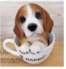
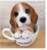
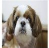
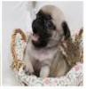
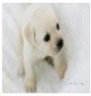
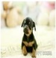
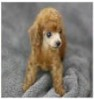
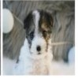

애완견 종류
활달한 강아지
- 요크셔테리어
- 생기있고 활달한 성질을 가지고 있으며 자신보다 몸집이 큰 개나 집에 들어온 침입자를 겁내는 일이 없어 좋은 번견이고 우리나라 최고의 가정견으로 자리 잡고 있다.
- 말티즈
- 애정이 많고, 충실하며 활발한 성격을 소유하고 있다. 이 종은 1급 가정견으로 요크셔테리어와 함께 우리나라 최고의 가정견으로 자리잡고 있다.
- 포메 라이언
- 활기차고 명랑한 개로 유명하고, 걷는 모습이 우아하다. 충실하고 우호적인 성격이 가장 먼저 거론된다.
- 골든 리트리버
- 이 견종은 충성심이 강하고 성격이 활달하여 어린아이나 여성이 상대하기에 적합한 견종이다. 참을성 또한 강하여 현재는 실내에서도 많이 길러지고 있다.


 
활달한 강아지

활달한 강아지
처음으로
온순한 강아지
- 쉬즈
- 얼굴에서~
- 퍼그
- 매우 사려가~
- 래브라도 리트리버
- 침착하고~



온순한 강아지
처음으로
사납지만 복종적인 강아지
- 미니어쳐핀셔
- 경계심이~
- 푸들
- 사납진~
- 폭스테리어
- 가정에서~



온순한 강아지
처음으로